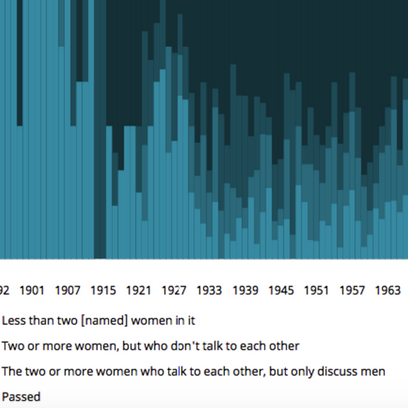
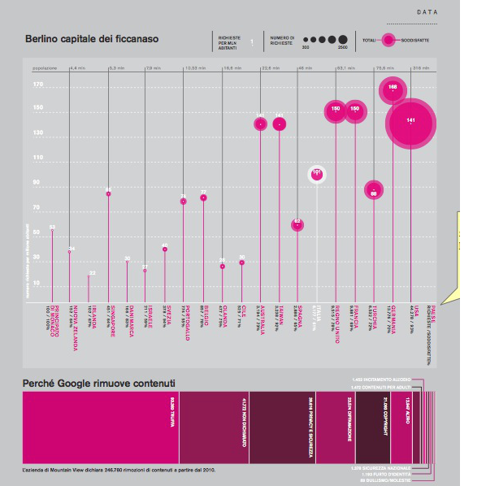
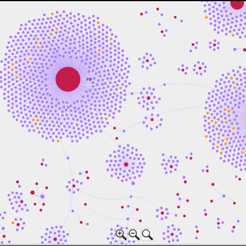
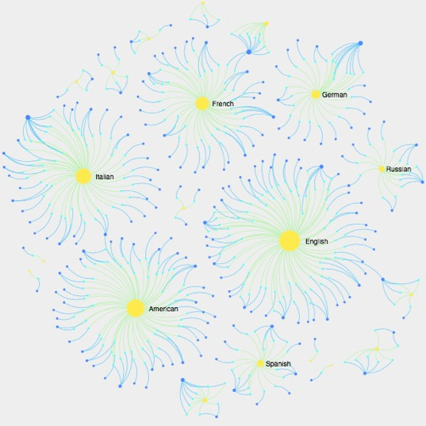

Bio
Portfolio
Events
Tutorials

Latest data reveals the size of the Oscar's gender gap
Data-driven analysis on the lack of female Nobel prize winners
Through the gender lens: one century of cinema history

The Transparency Reports' Database
Privacy: quando il Web fa lo spione
Semantic tool to access WikiLeaks' Spy Files

"Most Wanted”: Interpol’s transparency
The Donors Behind Italian Political Parties
Watching the watchers
Social meets civic. Civic social media and open government data

"The refugee crisis in data
Blossoming Books
The 2011 war in Libya in Italian newspapers